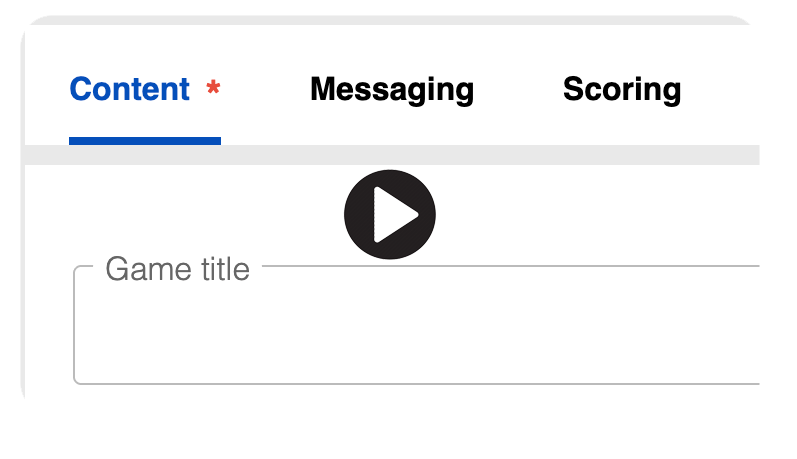

Generate a Word Search using PuzzleMe
Ready to build? This offsite generator handles the heavy lifting so you don't have to worry about prompts. Watch the video below to see how it works, then click through to get started!

Ready to build? This offsite generator handles the heavy lifting so you don't have to worry about prompts. Watch the video below to see how it works, then click through to get started!
